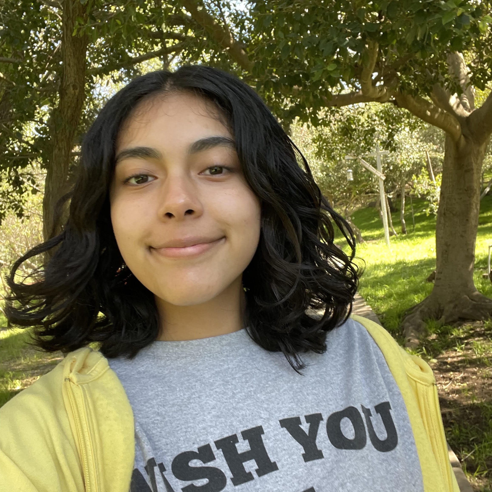

Koral TS
Hola aqui koral, quiero contarte un poco de mi y mi relacion con los libros, realmente leer es algo que me fascina hacer pues al leer me puedo sumergir en una historia llena de magia, de accion, de aventura, de amor hasta volverme la protagonisa del mas lindo poema de amor. Leer te devuelve un poco de la vida que quizas no pudiste vivir y acambio llenas de experiencias a tu alma. Por eso y mas, ¡te invito a leer!